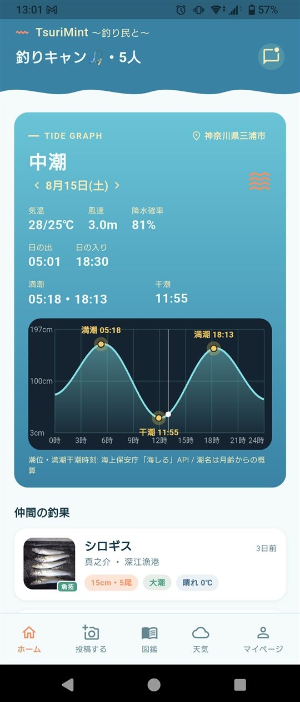
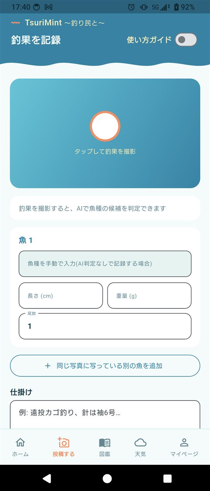
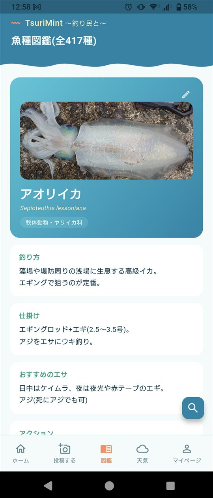
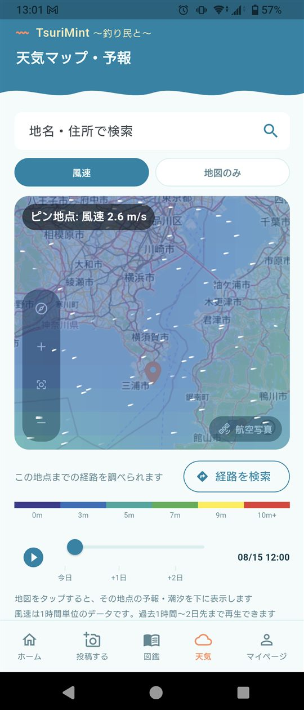
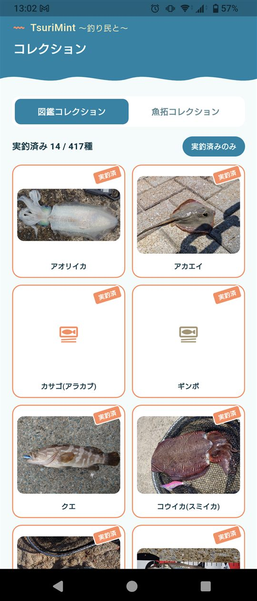
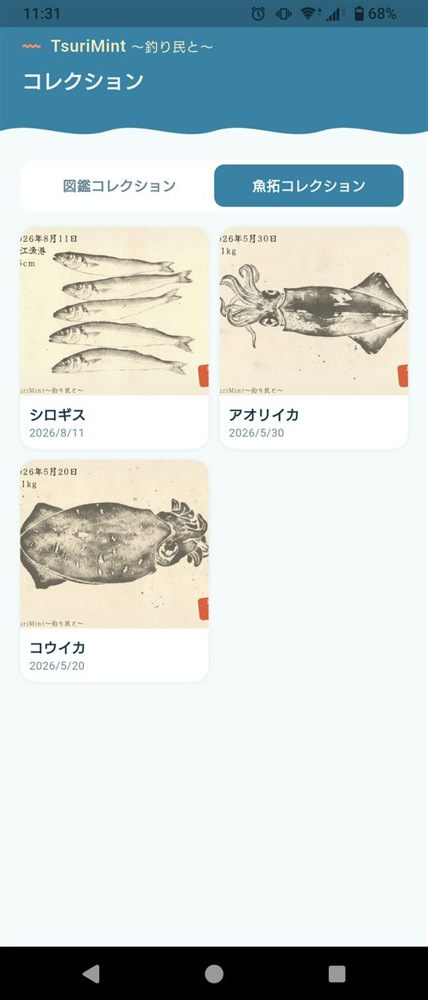

TsuriMint(～釣り民と～)は、写真を撮るだけでAIが魚種を判定。潮汐・天気を自動で取得できる釣り人のためのアプリ。釣果はグループの仲間とすぐに共有できます。
釣果を記録に残そうと思って、意外とハードルになっていること。
「ひとりで釣りに行くことも多いから、グループとか共有とか、要らないかな…」
Aひとりでも問題なく使えます。グループに入らなくても、釣果の記録・AI魚種判定・潮見・天気アプリとしてそのまま使えます。
「釣果をSNSに投稿するのはちょっと気が引けるんだよな…」
ATsuriMintは招待制のグループの中だけで共有。知らない人に見られる心配はありません。
「写真は撮ったけど、あとから魚の名前がわからなくなる…」
A写真を撮るだけでAIが魚種を判定。迷わず記録できます。
「潮汐や天気をいちいち調べるのがちょっと面倒…」
A潮汐・天気は自動で取得されるので、確認の手間がグッと減ります。
撮影・判定・記録・共有まで、釣行の一連の流れをアプリひとつで完結できます。
釣った魚を撮影するだけでAIが候補を判定。一致率の高い候補から選ぶだけで、種類の記録が一瞬で終わります。
写真から自動判定投稿した釣果に、日時・潮位・満潮干潮・気温・降水確率・風速を自動で取得して記録。手入力の手間がありません。
海上保安庁・WeatherAPI.com 連携招待リンクひとつで仲間を招待。グループの釣果フィードでその日の釣果をリアルタイムに共有。新しい投稿はプッシュ通知でお知らせします。
招待リンク・メンバー管理・通知魚種ごとの釣り方・仕掛け・アクションのポイントをまとめた図鑑。狙う魚が決まったらすぐに調べて準備できます。
釣り方・仕掛け・アクション解説釣った魚種は図鑑に自動でチェックが付き、マイページの図鑑タグに一覧表示されます。まだ釣ったことのない魚種もひと目でわかります(各コレクション画面内の魚拓図鑑は、プレミアムプラン限定です)。
釣った魚種のチェックリスト総釣行数や魚種数、魚種別の自己ベストを自動集計。時系列・魚種別・釣り場別に釣行履歴を振り返れます。
釣行履歴・自己ベスト記録地図にピンを立てるだけで、その地点の天気・風速・潮汐がわかります。次の釣行先を考えるときに便利です。
ピン地点の天気・風速・潮汐記録・図鑑・天気・コレクションまで、アプリ内の主要な画面をそのままご紹介します。






撮影してから記録・共有まで、驚くほど短く簡単に。
釣果の写真を撮るか、アルバムから選択するだけでアプリに取り込めます。
AIが判定した魚種の候補を一致率つきで表示。当てはまるものをタップするだけ。
潮汐・天気は自動入力済み。長さや重さを添えれば、グループにそのまま共有できます。
撮って、選んで、共有するだけ。釣果の記録がもっと楽しくなります。